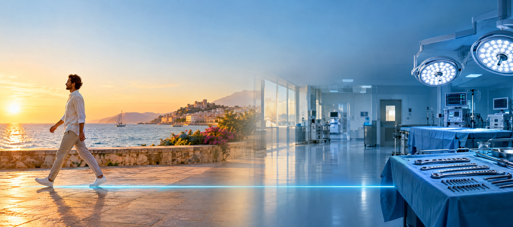
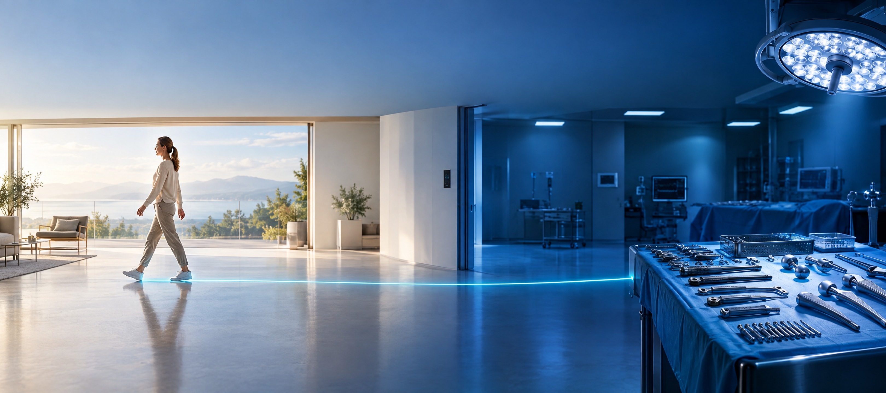
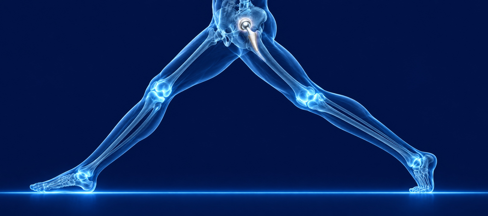

في غرفة العمليات
زرعات وأدوات جراحة العظام
وبعد العملية
مستلزمات التعافي والدعامات الطبية
حتى أولى خطواتك
معك في كل مرحلة، منذ 2006
@askmedlb
askmedlb.com
+961 76 103 507

في غرفة العمليات
زرعات وأدوات جراحة العظام
وبعد العملية
مستلزمات التعافي والدعامات الطبية
حتى أولى خطواتك
معك في كل مرحلة، منذ 2006
@askmedlb
askmedlb.com
+961 76 103 507

الجراحة
داخل
غرفة العمليات
زرعات وأدوات جراحة العظام
التعافي
حتى أولى
خطواتك
دعامات ومستلزمات ما بعد العملية
Orthopaedic surgery & recovery · Since 2006
@askmedlb
askmedlb.com
+961 76 103 507
جراحة العظام والتعافي
منذ 2006